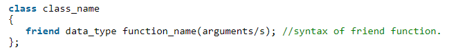

Friend Functions
A friend function in C++ is defined as a function that can access private, protected, and public members of a class.
The friend function is declared using the friend keyword inside the body of the class.

Friend functions of the class are granted permission to access private and protected members of the class in C++. They are defined globally outside the class scope.
Friend functions can be a member of a class or a function that is declared outside the scope of class.
We can declare it either in the ‘public’ or the ‘private’ part.
Generally, non-member functions cannot access the private members of a particular class. Once declared as a friend function, the function is able to access the private and protected members of these classes.